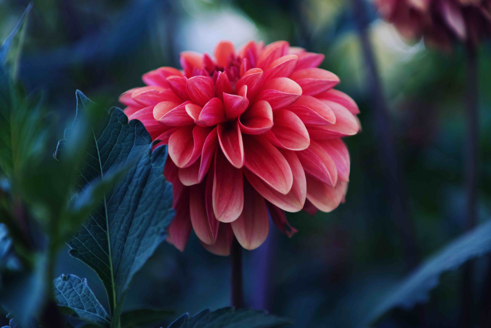
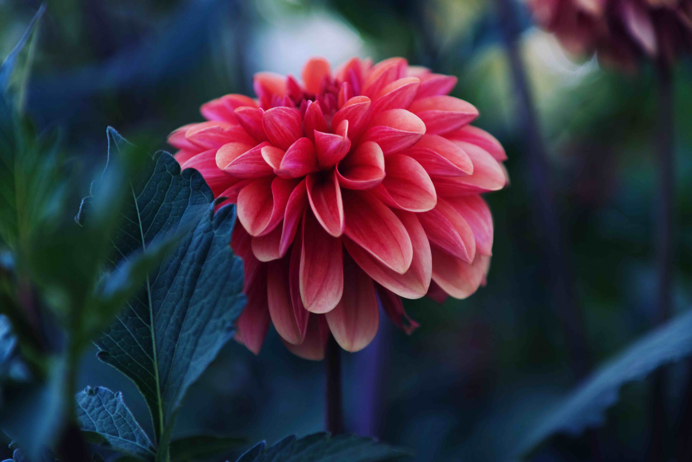

Hello, I'm Brittni!

I am an archaeolgist, GIS analyst, and future front-end web developer from Northern Michigan.
I am an archaeolgist, GIS analyst, and future front-end web developer from Northern Michigan.
Some are pictures of me and some are my work
 
